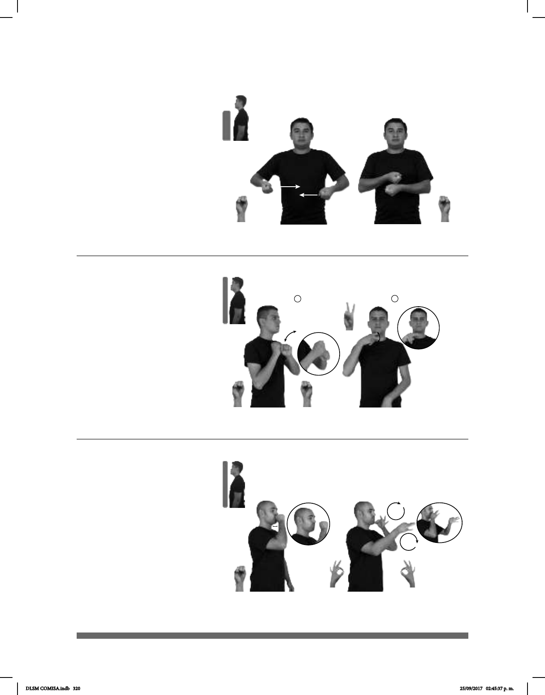

320
Seña: SS
S.1
Palmas hacia arriba.
A la altura del pecho de los
costados al centro.
Recto.
Representación: Simula la acción de
cerrar una olla express.
sust. f. Recipiente de metal
para cocinar redondeado y cuya tapa se
cierra herméticamente para que el vapor
producido en el interior, regulado por una
válvula, cueza los alimentos rápidamente.
(S-79)
MI MAMÁ COCINA OLLA-EXPRÉS POLLO CALDO SABROSO
Mi mamá cocina en la olla express caldo de pollo sabroso.
(S-80)
Seña: SB
MD seña que pasa de S.1, MB
S.1; II MD 2.2
MD la palma inicia hacia la
izquierda y termina hacia abajo. MB palma hacia
la derecha.
MD a la altura de la cara. MB a la
altura del pecho.
MD y MB se agitan y después MD
recto de la barbilla hacia el frente.
Simula la acción de pegarle a
la piñata.
que se celebran entre el 16 y el 24 de diciembre
para conmemorar el viaje de María y José a Belén
antes del nacimiento de Jesús; en ellas se reza el
rosario y una letanía, se hace una procesión con los
peregrinos y se cantan los textos para pedir y dar
posada; más tarde se rompen piñatas, se reparte la
colación y se merienda o se toma ponche.
PRÓXIMO-VIERNES MI CASA HABER POSADA
El próximo viernes hay posada en mi casa.
(S-81)
#TV
PUBLICIDAD HABER MUCHO
En la TV hay mucha publicidad.
Seña: SC: I. SM; II. SB
: I. S.1; II. MD y MB
F.8
I. Palma hacia la
izquierda; II. Las palmas se encuentran
frente a frente.
I. y II.A la altura de la
boca.
I. Recto de atrás hacia
adelante repetidamente; II. La MD y la
MB se mueven formando círculos hacia
el frente alternadamente.
sust. f. Conjunto de medios
y procedimientos empleados para dar a
conocer algo generalmente para llamar
la atención del público hacia ello o para
fomentar la adquisición y el consumo
de mercancías.
DLSM COMISA.indb 320 25/09/2017 02:45:37 p. m.